Feliz día Amor De Mi Vida ❤️
7 de septiembre - Nuestra primera conversación
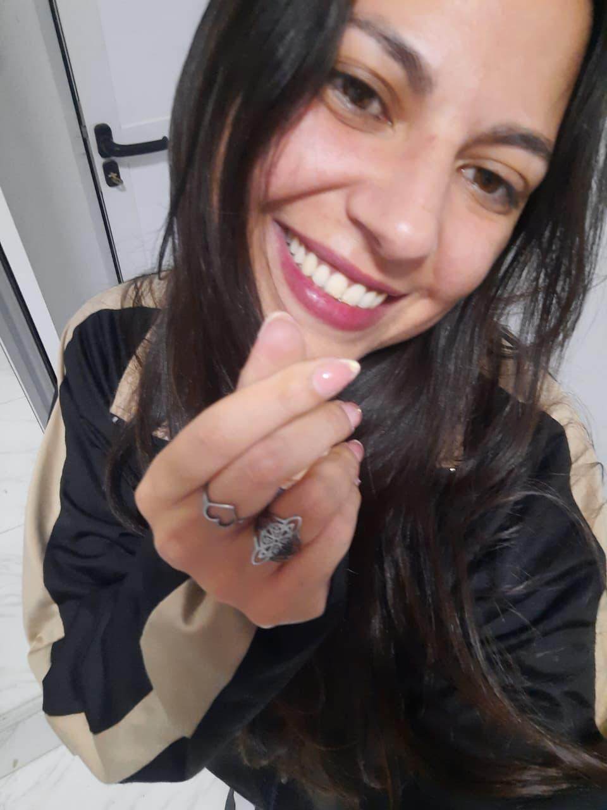
El 7 de septiembre fue el día en que hablamos por primera vez. Desde ese momento, conectamos de inmediato. Empezamos a hablar mucho, nos reíamos sin parar de las cosas que decíamos. Nos sorprendía lo fácil que era hablar de cualquier cosa, y lo mucho que nos entendíamos, incluso cuando nos desconectábamos y volvíamos a hablar después. Nos moríamos de risa solo por nombres tan diferentes. Un 'point smart' allá y un 'datafono' aquí, Es algo que solo podemos entender nosotros
Conociéndonos más a fondo

Nos fuimos conociendo más con el tiempo. A pesar de que nunca nos habíamos visto en persona ni tocado, nuestra conexión era tan fuerte, especialmente la atracción que sentíamos el uno por el otro. Nos sentíamos como si nos conociéramos de toda la vida. Cada conversación, cada mensaje, cada foto que compartíamos nos hacía sentir más cercanos. Es extraño cómo la distancia desaparecía cuando estábamos en contacto.
Las noches interminables
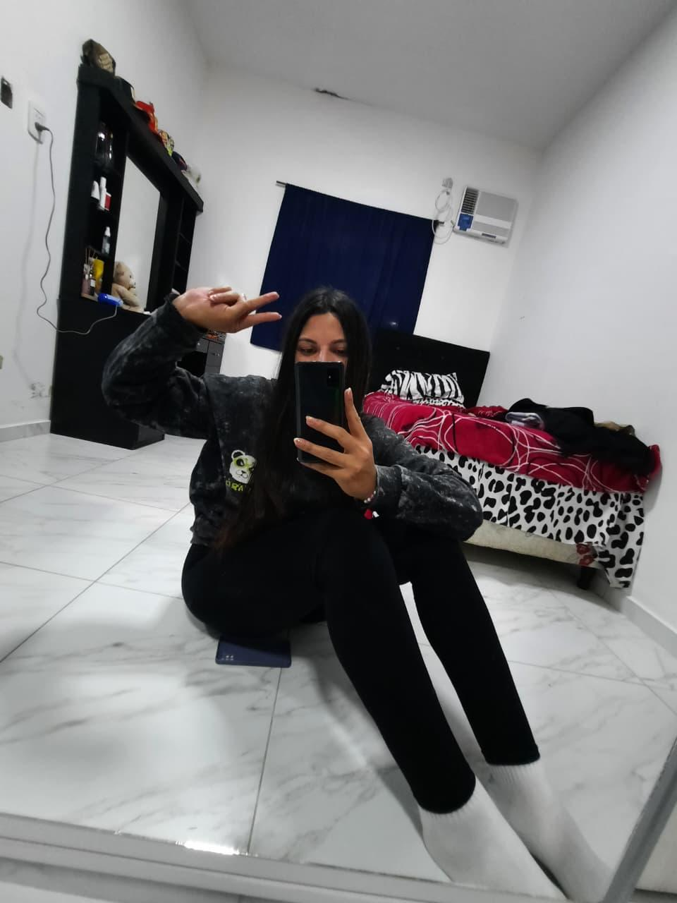
Hubo tantas noches en las que no podíamos dejar de hablar, las horas se nos pasaban volando. De hecho, nuestras noches eran interminables, no queríamos que terminara nunca. Desde que me despertaba hasta que me acostaba, siempre estábamos en llamadas, compartiendo pensamientos, risas y a veces, hasta nuestros miedos. No nos cansábamos de hablar, de reír, de compartir nuestras vidas.
Cuando empezamos a abrirnos
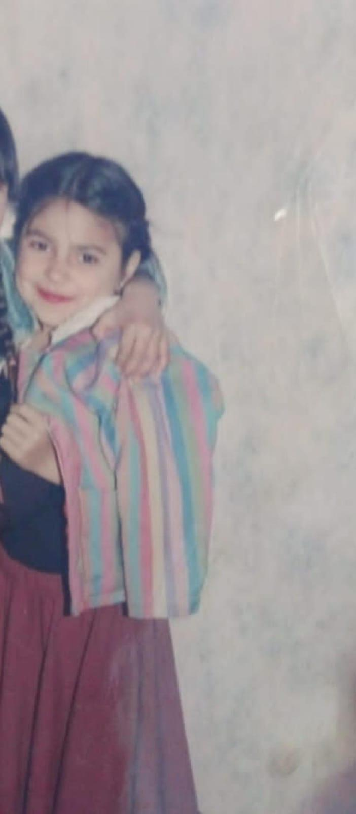
Empezamos a abrirnos más, a compartir detalles más personales, a mostrar una parte de nosotros que nunca habíamos mostrado antes. Fue en esos momentos cuando nos dimos cuenta de lo profundo que era lo que sentíamos. Nos contábamos cosas que nunca le habíamos contado a nadie, nos mostrábamos vulnerables y, al mismo tiempo, nos sentíamos más seguros que nunca. Cada mensaje tuyo, cada palabra, me hacía sentir más cerca de ti, aunque la distancia estuviera allí.
11 de septiembre de 2025
El primer "Te Amo"
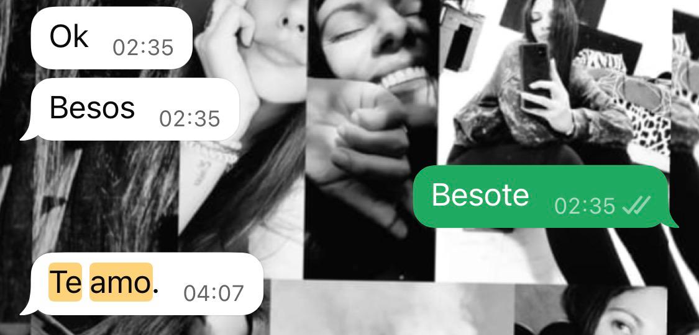
Recuerdo el primer "Te amo". Fue un momento de mucha emoción, de incertidumbre también, pero, al mismo tiempo, de mucha certeza. Habíamos compartido tanto en tan poco, habíamos vivido tantas emociones juntos, que no pude evitar decirte lo que sentía. Te espante un poco, pero aunque sea a través de la pantalla, lo dijimos. Ambos sentimos miedo, pero también sabíamos que lo que vivíamos era real, más allá de cualquier temor.
Los altibajos
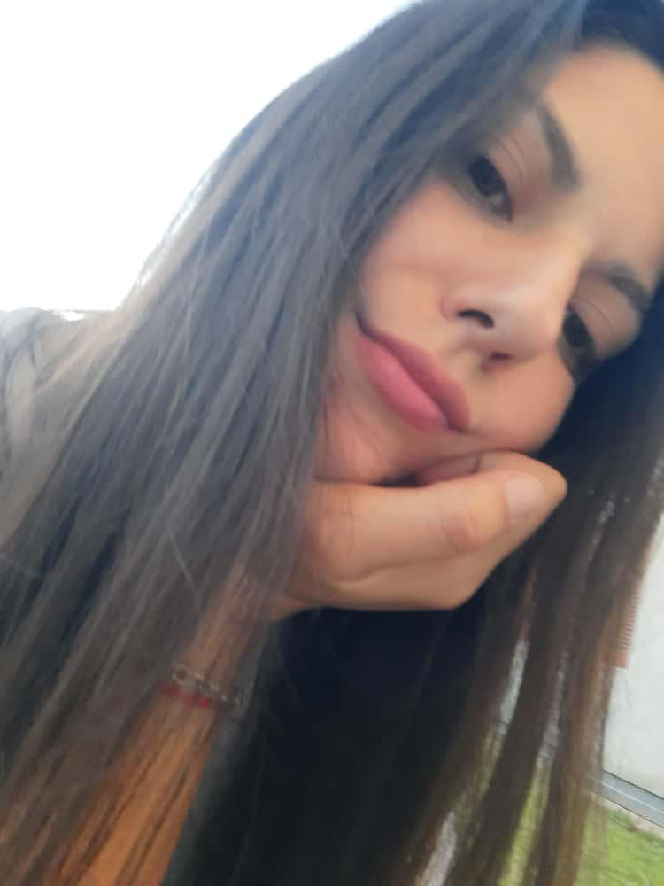
Hemos tenido nuestros altibajos, claro. Tuvimos discusiones, malentendidos, peleas por mentiras y cosas que nos alejaron por un tiempo, pero siempre regresamos. Nuestro amor es más grande que cualquier conflicto, y aunque a veces hemos dejado de hablar, siempre encontramos la forma de volver, porque lo que sentimos es más fuerte que cualquier obstáculo.
Ni la Distancia puede con nosotros
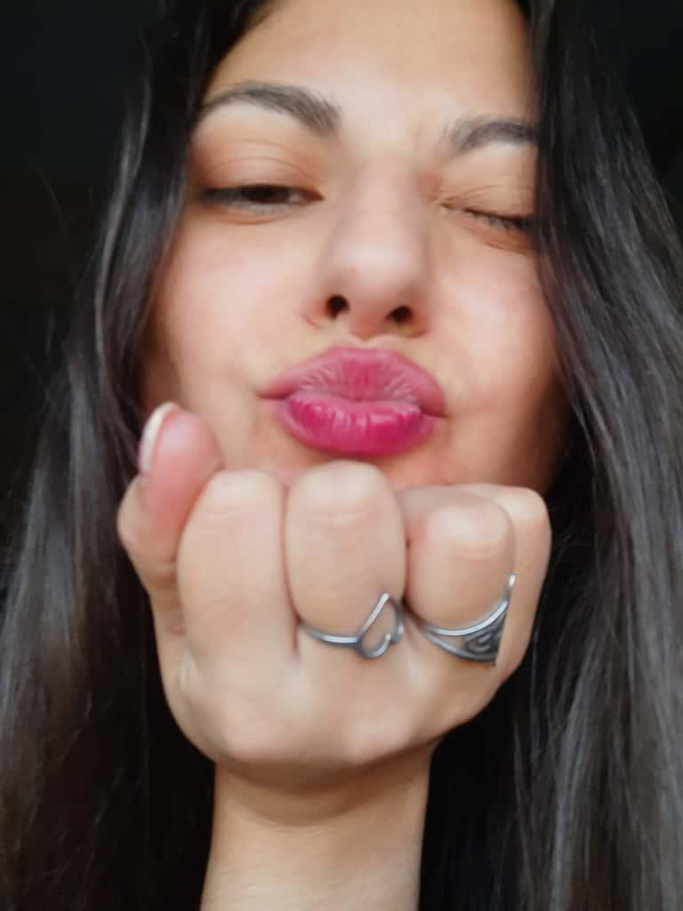
A veces nos sentimos inseguros, a veces temíamos perderlo todo, pero incluso cuando la distancia parecía insuperable, todo se volvía mejor en cuanto volvíamos a hablar. La confianza que hemos construido es tan fuerte que hasta para cosas pequeñas como ir al baño, estamos en llamada. La comodidad que siento contigo es algo que no puedo explicar, pero lo sé, es única. ¡Y qué hermoso es tenerte cerca, incluso si es solo a través de la pantalla!
Un refugio el uno para el otro
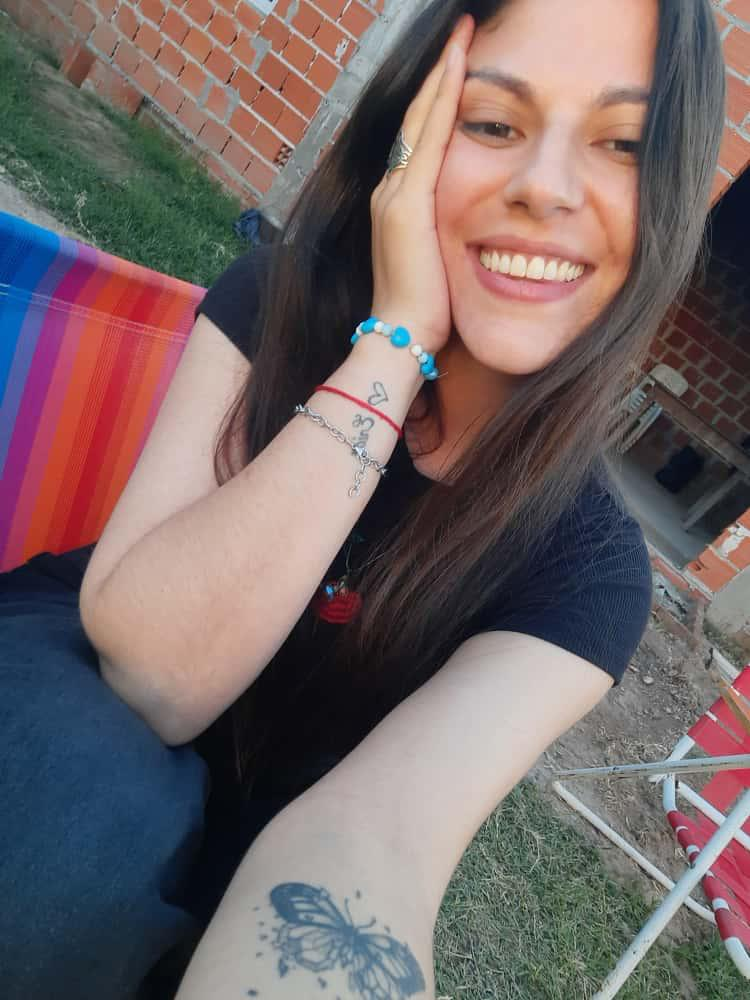
Hoy en día, después de tantos momentos compartidos, tantas emociones vividas, siento que siempre encuentro un refugio en ti. Un lugar seguro, donde puedo ser yo mismo. Cuando me equivoco, sé que siempre estarás ahí para escucharme, para darme el apoyo que necesito. Ya han pasado más de cinco meses, y aunque parece que el tiempo ha sido mucho, en realidad se siente como si estuviera conociéndote desde siempre.
El miedo al perdernos
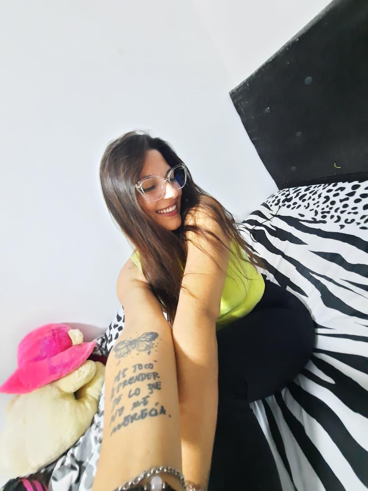
A veces, aunque no lo queramos admitir, tenemos miedo de perdernos y quedarnos con todo lo que sentimos. Es natural, pero también es un recordatorio de lo fuerte que es lo que sentimos. Sin embargo, aunque el miedo esté presente, sé que juntos lo superamos, porque lo que compartimos es más grande que cualquier temor. El amor que tenemos no se mide en días, sino en lo que sentimos cada día. Y este amor, este vínculo que hemos construido, es algo único.
Hoy, más fuertes que nunca
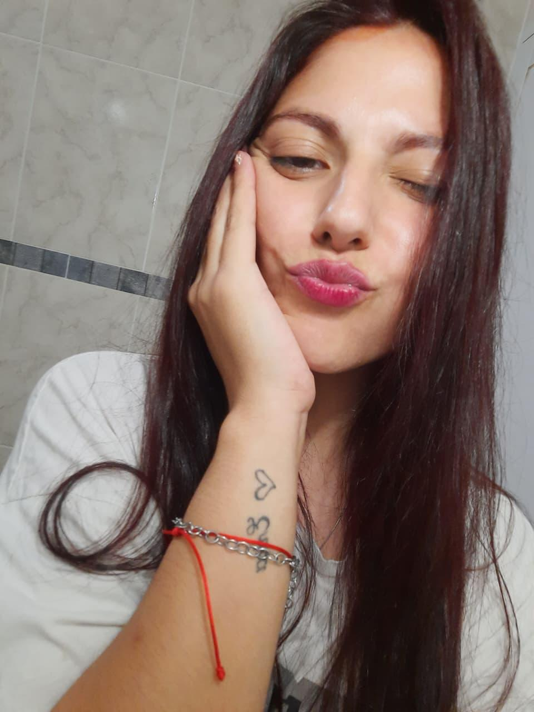
Hoy, después de cinco meses y un poco más, siento que hemos recorrido un largo camino. Y aunque la distancia sigue ahí, siento que cada día que pasa, nos acercamos más. La conexión que tenemos no se mide en tiempo, sino en lo que vivimos juntos. Cada día a tu lado es un regalo, y aunque aún hay mucho por aprender y vivir, estoy seguro de que cada paso juntos vale la pena.
Mi agradecimiento eterno
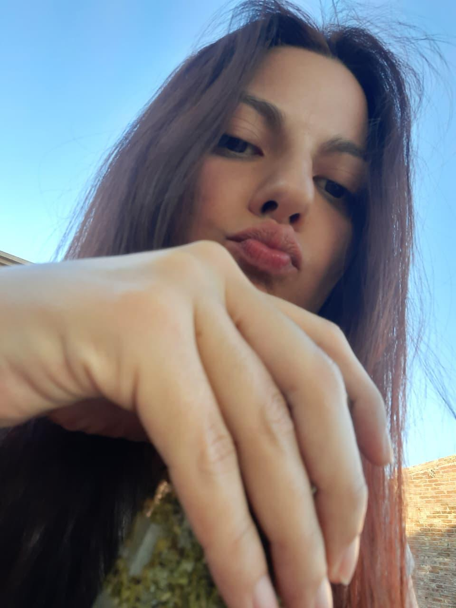
Hoy, en este día de San Valentín, quiero dedicar este momento para agradecerte, Belén. No puedo más que dar las gracias por todo lo que eres, por todo lo que significas para mí. Desde que llegaste a mi vida, todo ha cambiado, todo se ha vuelto más colorido, más vibrante, más real. Me has dado propósito, me has dado alegría, me has dado felicidad. A tu lado siento que todo tiene un significado, y todo tiene razón de ser.
Imposible describir todo lo que me haces sentir
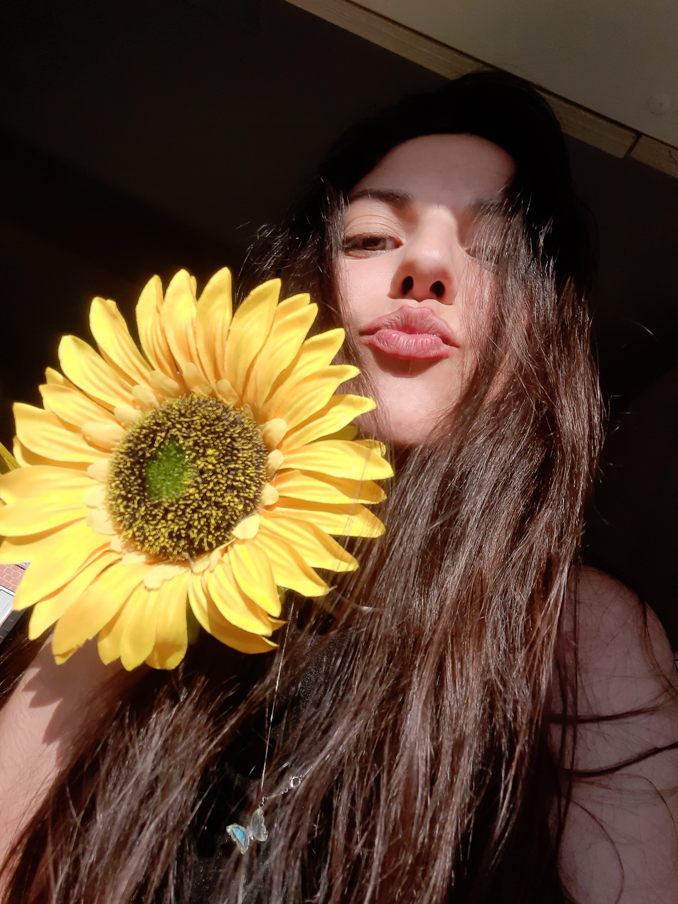
No sé cómo resumir lo que siento, y aunque intente ponerlo en palabras, siempre se quedará corto. Es imposible encapsular nuestra relación en una simple página web. Lo que hemos vivido, lo que compartimos, lo que sentimos, es mucho más que cualquier cosa que pueda escribir aquí. Lo que siento por ti es más grande que todo, y mi vida es mucho mejor porque estás en ella. Siempre hemos sabido que no todo es color de rosa, pero también sabemos que siempre estamos ahí el uno para el otro, y eso es lo que importa. Gracias, gracias por estar ahí, por nunca faltarme. Te agradezco con todo lo que soy, con toda mi alma. Te pido, por favor, que nunca faltes. Hoy, en este día del amor, quiero expresarte todo lo que siento. Esta página es solo una pequeña parte de lo que eres para mí, pero con ella quiero que sepas cuánto te amo, cuánto significas para mí.
En conclusión, Te amo y eres el amor de mi vida.